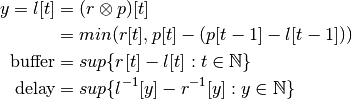
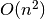
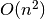

Precise Network Performance Prediction : Theory¶
This chapter describes the mathematical formalization behind the
network analysis techniques used by Precise Network Performance
Prediction, ( ).
).
Mathematical Formalism¶
To model the network capability of the system and the application traffic patterns, we have developed a network modeling paradigm similar to Network Calculus’ traffic arrival curves and traffic shaper service curves.
Similarly to Network Calculus’ arrival curves and service curves, our network profiles model how the network performance or application traffic generation changes with respect to time. Whereas Network Calculus’ modeling transforms application data profiles and network service profiles into min and max curves for data received vs. size of time-window, our models take a simpler, deterministic approach which models exactly the data generated by the application and the data which could be sent through the network, allowing our performance metrics to be more precise. Specifically, the bandwidth that the network provides on a given communication link is specified as a time series of scalar bandwidth values. Here, bandwidth is defined as data rate, i.e. bits per second, over some averaging interval. This bandwidth profile can then be time-integrated to determine the maximum amount of data throughput the network link could provide over a given time. The bandwidth profile for the application traffic similarly can be time-integrated to determine the amount of data that the application attempts to send on the network link as a function of time.
Having time-integrated the bandwidth profiles to obtain data vs. time
profiles that the application requires and that the system provides,
we can use a special type of convolution ( ),
(min,+)-calculus convolution, on these two profiles to obtain the
transmitted link data profile as a function of discrete time. The
convolution we define on these profiles borrows concepts from the
min-plus calculus used in Network Calculus, but does not use a
sliding-window and instead takes the transformed minimum of the
profiles. For a given application data generation profile,
),
(min,+)-calculus convolution, on these two profiles to obtain the
transmitted link data profile as a function of discrete time. The
convolution we define on these profiles borrows concepts from the
min-plus calculus used in Network Calculus, but does not use a
sliding-window and instead takes the transformed minimum of the
profiles. For a given application data generation profile,
![r[t]](_images/math/8d85052c33844b2074fa63b28dcb671b60af6411.png) , and a given system link capacity profile
, and a given system link capacity profile ![p[t]](_images/math/0dbbb6284c52a5c09f5b48ad92262621f105e135.png) ,
where
,
where  , the link transmitted data profile
, the link transmitted data profile
![l[t]](_images/math/c52328274518603a2cc478a4db8925ffa035faed.png) is given by the convolution equation
(1). The difference
is given by the convolution equation
(1). The difference ![(p[t-1] - l[t-1])](_images/math/9465858efbe52662754f887345be2050bbba2c0d.png) represents
the difference between the amount of data that has been transmitted on
the link
represents
the difference between the amount of data that has been transmitted on
the link ![(l[t-1])](_images/math/134395d31a37b43835aaa38482a8b40111cf297b.png) and the data that the link could have
transmitted at full utilization
and the data that the link could have
transmitted at full utilization ![(p[t-1])](_images/math/9c3f19d8351f954b7742f329357f44e13a73aded.png) . As demonstrated by
the convolution equation, , which is
the relation that, without lower-layer reliable transport, the link
cannot transmit more application data for the application than the
application requests as there will be packetization and communication
header overhead as well. The buffer and delay equations
(1) use the output of the convolution with the input
profile to predict the minimum required buffer size for lossless
tranmission and the maximum delay experienced by the transmitted data,
respectively. A representative convolution example is shown below for
reference.
. As demonstrated by
the convolution equation, , which is
the relation that, without lower-layer reliable transport, the link
cannot transmit more application data for the application than the
application requests as there will be packetization and communication
header overhead as well. The buffer and delay equations
(1) use the output of the convolution with the input
profile to predict the minimum required buffer size for lossless
tranmission and the maximum delay experienced by the transmitted data,
respectively. A representative convolution example is shown below for
reference.
(1)

Illustrative example for network profile convolution.
Assumptions Involved¶
As with any type of system modeling and analysis paradigm, it is important to remain aware of the types of systems the modeling/analysis is applicable to, the requirements imposed on the system by the model, and any edge cases or scenarios where the analysis or modeling paradigm breaks down.
The major assumption that we make with this type of system modeling and analysis is that we can know at design time what the system network capacity and the application data production will be as a (possibly periodic) function of time. Of course, this assumption is unrealistic for heavily data-dependent systems, but by performing some code analysis and/or doing some controlled experiments, models of the applications’ behavior can be developed that can be analyzed.
Another key assumption and thus requirement of our modeling and analysis framework is a system-wide synchronized clock which all nodes use. By this we mean that if two nodes produce data for a third node at time seconds, they will produce their data at exactly the same time. This is required for the composition of profiles as they traverse the network and are routed through nodes. This assumption restricts the types of systems for which our analysis can be most useful, but is not a critical hindrance, as many such critical systems, e.g. satellite constellations or UAVs have GPS synchronized clocks, which provide such a foundation.
Another restriction with our modeling paradigm is that data-dependent flows cannot be accurately represented, since we have no way of modeling data-dependence. A related assumption is processing power and the ability of the software to adhere to the profiles: we assume the applications are able to accurately and precisely follow their data production profiles, regardless of the number of other components on their hardware node. Similarly, we assume that under all circumstances, the service profile of a hardware node will be adhered to.
Factors Impacting Analysis¶
It is important when developing modeling and analysis techniques to analyze how the analysis time and results are affected by changes in the model. This is especially true when trying to determine how applicable new techniques are to large scale systems. Models are provided by the application and system developers and are described in the form of bandwdith (bps) vs time that the application requires or the system provides. These profiles are a time series that maps a given time to a given bandwdith. Between two successive intervals, the bandwidth is held constant. Clearly, to represent changing bandwidth over time, the developer must use sufficiently short enough time intervals to allow step-wise approximation of the curve. However, as with any system, there is a tradeoff between precision of the model and the analysis time and results.
Because the fundamental mathematics are linear for our convolution,
our convolution scales with  , where
, where  is the total
number of intervals in all of the profiles analyzed. It is worth
noting that this complexity is not the same as the  or
complexity that traditional convolution has. This
decrease in complexity is due to our convolution only requiring a
single operation (comparison operation for the minimum) for each value
of
is the total
number of intervals in all of the profiles analyzed. It is worth
noting that this complexity is not the same as the  or
complexity that traditional convolution has. This
decrease in complexity is due to our convolution only requiring a
single operation (comparison operation for the minimum) for each value
of  . As such, each element in both of the profiles being
convolved only needs to be operated on once.
. As such, each element in both of the profiles being
convolved only needs to be operated on once.
Clearly, the overall system analysis complexity depends on the complexity of the system, so as the system scales and increases routing complexity, so too will the analysis complexity. However, for all systems there is an asymptotically increasing precision for a given increase in model precision and analysis time.